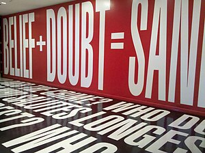

Barbara Kruger (Newark, 26 de enero de 1945) es una artista conceptual estadounidense. Gran parte de su trabajo consiste en fotografías en blanco y negro cubiertas de un pie de foto declarativo, de letras blancas sobre rojo con tipografía Futura gruesa oblicua. Las frases en sus obras a menudo incluyen el uso de pronombres en inglés como "you", "your", "I", "we", y "they". En 1989 realizó la obra “Your body is a battleground” (tu cuerpo es un campo de batalla), título que se ha convertido en lema para el feminismo.
Es conocida principalmente por su obra basada en la fotografía, que combina su formación como diseñadora gráfica con su interés por la poesía y la influencia de los medios de comunicación de masas. Después de haber estado en la Syracuse University, la escuela de Artes Visuales, y de estudiar arte y diseño con Diane Arbus en la escuela de diseño Parson’s en Nueva York, Barbara Kruger obtuvo un trabajo en Condé Nast Publications. También trabajaría para la revista Mademoiselle, y ocuparía pronto el lugar de cabeza del área de diseño antes de trasladarse a California en 1976 para dedicarse al arte y a la poesía. Barbara Kruger trabajó como diseñadora gráfica, directora artística y como editora de imágenes en el departamento de arte de las revistas House and Garden y Aperture entre otras. El trabajo artístico que hoy conocemos de Barbara Kruger se vio muy influenciado por sus experiencias creativas en el campo del diseño. La artista interpreta y trabaja sobre documentos fotográficos ya existentes con textos sucintos y agresivos que envuelven al espectador en la lucha de valores cotidianos predeterminados por el ámbito sociocultural. Barbara Kruger además de ser artista y diseñadora, estuvo enseñando en diferentes lugares de prestigio como el Instituto de Arte de California, el Instituto de Arte de Chicago y en la Universidad de California, en Berkeley. Vive entre Nueva York y Los Ángeles. Habiendo diseñado ya varias cubiertas para libros de tema político, Kruger siguió lidiando con cuestiones sociales, en particular la misoginia y el abuso de poder. Empleando el lenguaje visual de la publicidad y los medios de comunicación -en carteles, vallas e incluso camisetas, además de las galerías-, subvierte la iconografía de la sociedad de consumo usándola como vehículo de sus mensajes.
la obra de Kruger, desde su madurez, es interdisciplinar y comprende tanto la escritura y la imagen, como el diseño y la edición. Sobre ella tuvo mucha influencia el trabajo periodístico de Alexander Wolcatt, por su crítica focalizada en películas, televisión, música y cultura pop. Barbara Kruger en su obra propone preguntas sobre algunos temas de nuestro entorno sociocultural como los estereotipos, algunas situaciones que se crean en la sociedad, realidades políticas, y cuestiona el poder, la sexualidad y la representación. No obstante el registro de los temas, Kruger en su obra no llega a tener connotaciones de pesado moralismo.
